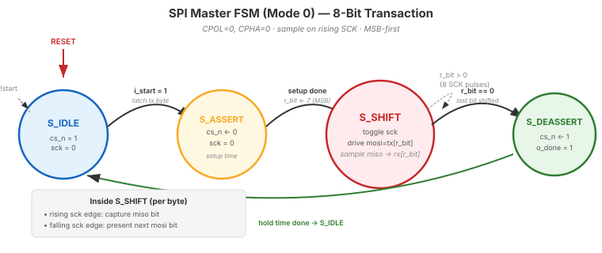

Video 3 of 4 · ~9 minutes
Dr. Mike Borowczak · Electrical & Computer Engineering · CECS · UCF
SD cards. SPI flash memory (where your FPGA's config bitstream lives). Accelerometers, gyroscopes, magnetometers, barometers — every MEMS sensor you've ever owned. OLED and E-ink displays. Temperature sensors. ADC/DAC chips. SD/MMC protocols layer on SPI. NAND flash uses SPI variants. SPI is the peripheral interface in the embedded world. Any time a small device needs to talk fast to a microcontroller, it's usually SPI.
Today introduces the protocol. Your capstone may use SPI to talk to a display or an external flash. Real embedded careers spend half their time driving SPI peripherals. You'll see how SPI compares to UART (much faster, requires shared clock) and how it layers on the shift registers you already know.
“SPI is like UART but with more wires. Same async framing, different protocol.”
SPI is synchronous — master and slave share a common clock (SCK). The master drives SCK and MOSI (data to slave); slave drives MISO (data to master). Simultaneously on every clock edge. No baud-rate negotiation, no start/stop bits, no oversampling needed. Can run at tens or hundreds of megabits/s — orders of magnitude faster than UART. The cost: more wires (4 typically: SCK, MOSI, MISO, CS).
Master (FPGA) Slave (sensor, flash, ...)
┌─────────────┐ ┌─────────────┐
│ SCK ──┼───────clock──────────►│── SCK │
│ │ │ │
│ MOSI ──┼──master out, slave in►│── MOSI │
│ │ │ │
│ MISO ◄─┼──master in, slave out─┼── MISO │
│ │ │ │
│ CS ──┼───chip select (low)──►│── CS_n │
└─────────────┘ └─────────────┘
◄───── 1 byte (8 bits) ─────►
│ │
CS ────────┐ ┌────────
└────────────────────────────────────────┘
(deassert)
SCK ─┐ ┌─┐ ┌─┐ ┌─┐ ┌─┐ ┌─┐ ┌─┐ ┌─┐ ┌─┐ ┌─────
└───┘ └─┘ └─┘ └─┘ └─┘ └─┘ └─┘ └─┘ └────┘
idle ^ ^ ^ ^ ^ ^ ^ ^
│ │ │ │ │ │ │ │
MOSI ─X═════╩═══╩═══╩═══╩═══╩═══╩═══╩═══╩═════X────
D7 D6 D5 D4 D3 D2 D1 D0
(MSB first — opposite of UART!)

S_SHIFT self-loop is the heart of SPI: each iteration is one SCK pulse, MSB-first (opposite of UART's LSB-first). MOSI changes on the falling SCK edge so it's stable when the slave samples on the rising edge. Compare with UART TX: same shape, different protocol — this is the “FSM + datapath” pattern again.
| Feature | UART | SPI | I²C |
|---|---|---|---|
| Wires | 2 (TX, RX) | 3-4 (+CS per slave) | 2 (SCL, SDA) |
| Clock | Async (baud agreement) | Sync (SCK shared) | Sync (SCL shared) |
| Speed (typ.) | 9.6k - 1 Mbaud | 1 - 50+ MHz | 100k / 400k / 1M / 3.4M |
| Full-duplex | Yes (both directions) | Yes (MOSI + MISO) | No (half-duplex) |
| Multi-slave | No (point-to-point) | Yes (1 CS per slave) | Yes (7-bit address) |
| Typical use | Console, debug, configuration | Fast peripherals: flash, display, sensor | Slow/shared: sensors, I/O expanders, EEPROM |
For each scenario, pick UART, SPI, or I²C:
~5 minutes
▸ COMMANDS
cd lecture_examples/week3_day12/d12_s4_ex2/
cat spi_master.v # CPOL=0, CPHA=0
make sim # ADC model responds
make wave
# see SCK, MOSI, MISO, CS
# aligned 8-bit transaction▸ EXPECTED STDOUT
TX byte: 0x42 (start conv)
RX byte: 0xA5 (ADC result)
PASS: CS falls, SCK toggles
PASS: 8 edges, 8 bits
PASS: MSB-first order
PASS: CS rises after transfer
=== 16 passed, 0 failed ===▸ GTKWAVE
Signals: cs_n · sck · mosi · miso. Classic SPI waveform: CS falls, 8 SCK pulses, MOSI transmits byte MSB-first, MISO returns byte MSB-first, CS rises. Two 8-bit shift registers running synchronized — left edge to sample, right edge to shift.
SPI has 4 variants based on clock polarity (CPOL) and clock phase (CPHA):
| Mode | CPOL | CPHA | Clock idle | Sample edge |
|---|---|---|---|---|
| 0 | 0 | 0 | Low | Rising |
| 1 | 0 | 1 | Low | Falling |
| 2 | 1 | 0 | High | Falling |
| 3 | 1 | 1 | High | Rising |
Ask AI: “Design an SPI master (mode 0) that transfers 16-bit words. Include CPOL/CPHA rationale, clock divider from 25 MHz to 1 MHz SCK, and a simple AD7476-style slave testbench.”
TASK
AI designs SPI master + TB.
BEFORE
Predict: MSB-first shift reg, SCK divider, CS state machine, 16-bit counter.
AFTER
Strong AI explains mode 0 choice. Weak AI picks one without explaining why.
TAKEAWAY
Mode choice depends on slave datasheet. AI should always reference it.
① SPI is synchronous: shared clock, no timing negotiation.
② 4 wires: SCK, MOSI, MISO, CS. MSB-first (opposite of UART).
③ SPI >> UART on speed (MHz vs kHz), at cost of more wires.
④ 4 modes (CPOL/CPHA). Check your slave's datasheet.
🔗 Transfer
Video 4 of 4 · ~8 minutes · Week 3 Capstone
▸ WHY THIS MATTERS NEXT
You've now built UART TX, UART RX, and SPI master — three major IP blocks. Video 4 is the Week 3 capstone: how to integrate these, plus third-party IP, into a complete system. The IP Integration Checklist you'll learn is what distinguishes junior engineers (who hack) from senior engineers (who integrate reliably).